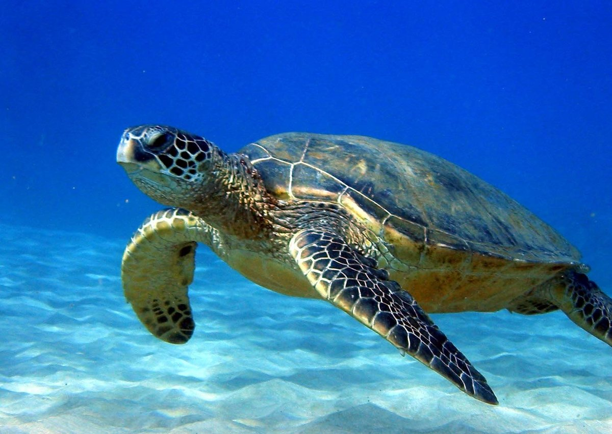
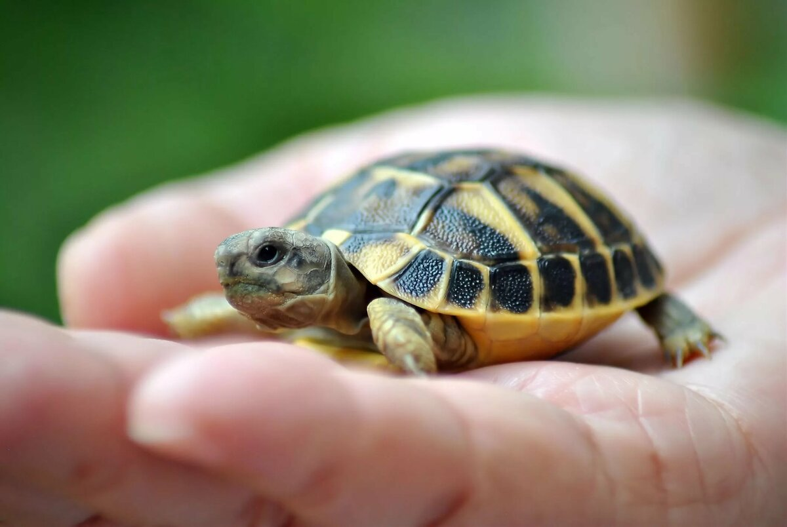
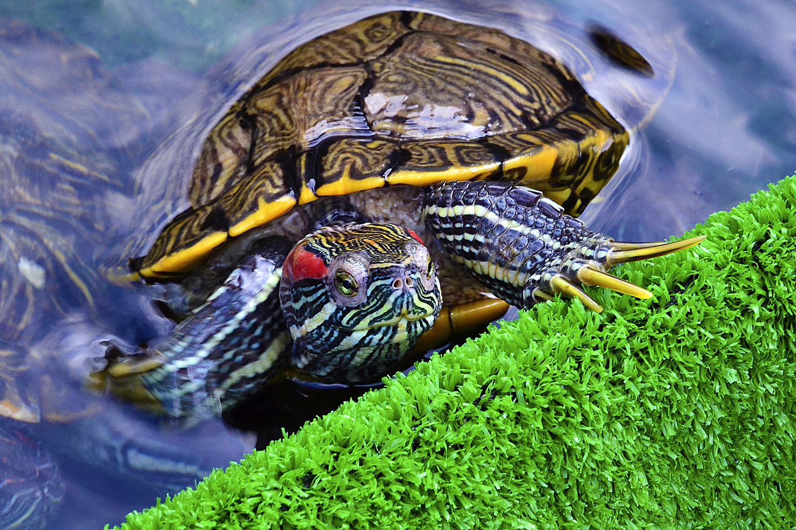
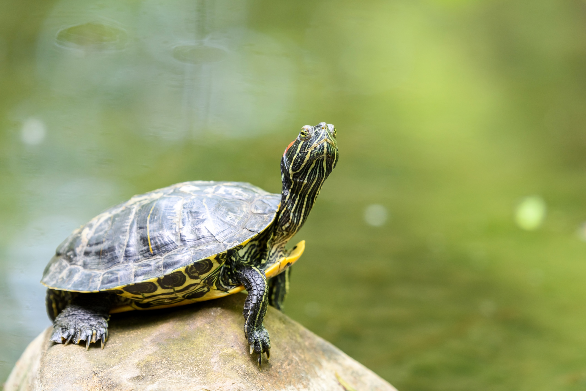
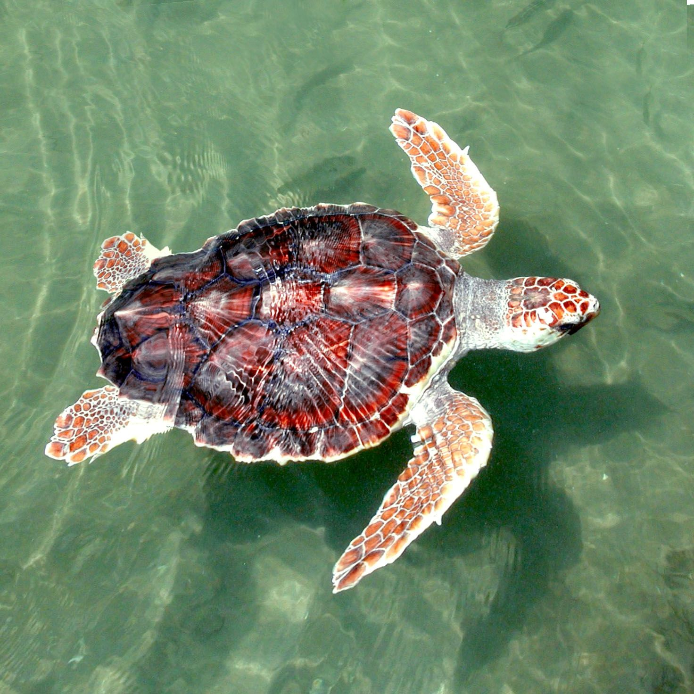
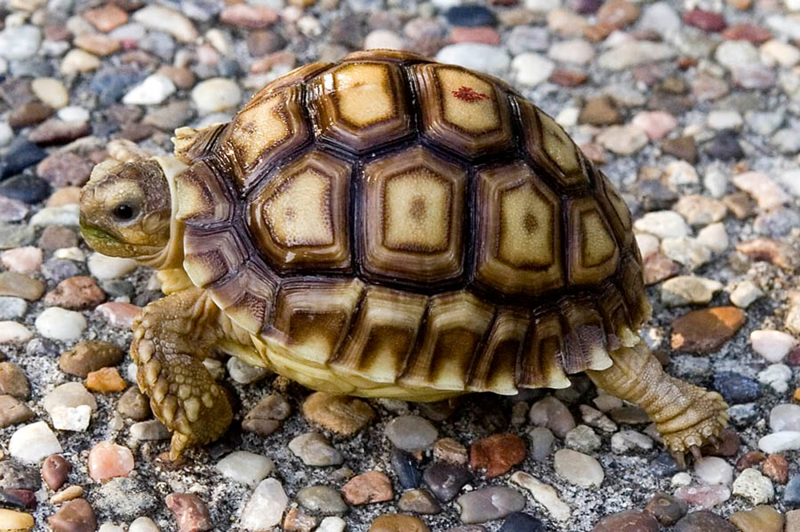
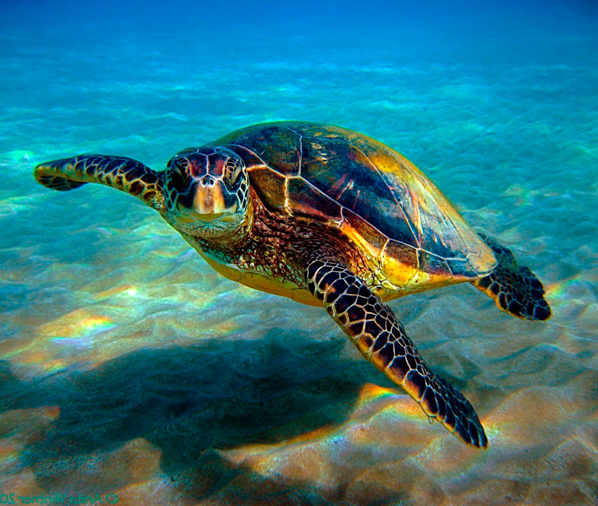
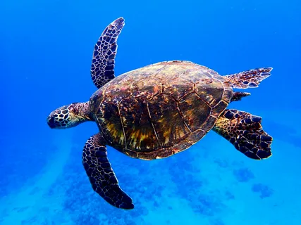

Что это за сайт?
Этот сайт сделан как портфолио и чтобы рассказать вам немного про черепах. Из-за попадающего в океан пластика черепахи оказались под угрозой исчезновения. Эксперты нашли на берегах городов Фаур-Хаккан и Кальба 64 черепахи и исследовали их, чтобы оценить опасность пластиковых отходов для морских обитателей. Результаты показали, что 75 процентов умерших зеленых черепах и 57 процентов умерших головастых черепах при жизни ели мусор: полиэтиленовые пакеты, бутылочные крышки и куски рыболовных сетей.
В одной из черепах нашли 325 осколков пластика, в другой — 32 куска рыболовной сети. Попав в организм животного, эти отходы могут повредить органы, спровоцировать непроходимость кишечника и образование газов. В результате черепаха не сможет есть и умрет от голода. Автор исследования Фади Ягмур и его коллеги предупреждают, что пластик может привести к исчезновению некоторых видов рептилий.
Черепахи бисса, а также зеленые и головастые уже сейчас считаются редкими. Именно эти виды часто путают отходы с привычной едой: зеленые черепахи едят похожие на медуз пластиковые пакеты, головастые глотают бутылочные крышки и другие маленькие объекты из-за их сходства с улитками. Ученые также выяснили, что молодые особи съедают больше мусора из-за неопытности.
Черепахи очень важны, ведь они такие удивительные создания.
В одной из черепах нашли 325 осколков пластика, в другой — 32 куска рыболовной сети. Попав в организм животного, эти отходы могут повредить органы, спровоцировать непроходимость кишечника и образование газов. В результате черепаха не сможет есть и умрет от голода. Автор исследования Фади Ягмур и его коллеги предупреждают, что пластик может привести к исчезновению некоторых видов рептилий.
Черепахи бисса, а также зеленые и головастые уже сейчас считаются редкими. Именно эти виды часто путают отходы с привычной едой: зеленые черепахи едят похожие на медуз пластиковые пакеты, головастые глотают бутылочные крышки и другие маленькие объекты из-за их сходства с улитками. Ученые также выяснили, что молодые особи съедают больше мусора из-за неопытности.
Черепахи очень важны, ведь они такие удивительные создания.
Информация про Черепах
У всех черепахи ассоциируются с извечной медлительностью, свойственной этим пресмыкающимся, но далеко не все знают, что черепахи одни из древнейших представителей животного мира нашей планеты. Эти существа обитают на Земле вот уже более 220 миллионов лет, да, они ровесницы вымерших динозавров. Само название слова «черепаха» происходит от древнеславянского «черепок», «черепица», аналогично и латинское название черепахи – «testa» переводится как «черепица», очевидно, так прозвали черепах благодаря схожести их панцирей собственно с черепицей.
Панцирь
Пожалуй, именно панцирь у черепахи является ее самым характерным отличием, своего рода черепашьей визитной карточкой. Для черепахи он, по сути, является таким себе передвижным домом + средством защиты от врагов. Состоит черепаший панцирь из спинной (карапакс) и брюшной (пластрон) части. Карапакс в свою очередь состоит из двух частей, одна из которых внутренняя броня, образованная из костных пластинок, а вторая наружная часть, состоящая из роговых щитков. У некоторых видов черепах костные пластины покрыты кожей. Панцирь черепахи очень прочный, так он легко способен выдержать нагрузку, превышающую вес самой черепахи в 200 раз.
Размер
Размеры черепахи и их вес, сильно отличаются от видовой принадлежности, так в черепашьем семействе встречаются, как гигантские черепахи с весом более 900 кг, и размеров панциря в 2,5 и более метра, так и маленькие черепашки с весом до 125 грамм и размером панциря не более 10 см.
Есть ли у черепахи зубы? Сколько зубов у черепахи?
Зуб у современных черепах, к сожалению, нет, зато они были у древних черепах, тех, которые жили в эпоху динозавров, но с течением времени они исчезли. Тогда как черепаха ест? Для откусывания и измельчения пищи черепахи используют сильный клюв, поверхность этого клюва покрыта шероховатыми выпуклостями, которые практически и заменяют черепахам зубы. Язык черепах короткий, служит он исключительно для глотания пищи, но не для ее захвата, и как следствие, не высовывается наружу.
Конечности и хвосты
Все без исключения черепахи имеют по четыре лапы. А вот уже само строение этих лап зависит от вида и среды обитания черепахи. Лапы сухопутных черепах имеют уплощенную форму, они приспособлены для рытья грунта и довольно мощные. У морских черепах в процессе миллионов лет эволюции лапы превратились в самые настоящие ласты для удобства плавания в морских пучинах.Также практически все черепахи обладают хвостом. Хвост черепахи также подобно голове способен прятаться в панцире. Причем что интересно, у некоторых черепах на кончике хвоста имеется настоящий заостренной формы шип, служащих еще одним средством защиты от врагов.
Интересный факт: некоторые сухопутные черепахи с возрастом могут линять, и старая кожа у них отслаивается и опадает, причем как с лап, так порой и с панциря.
Интересный факт: некоторые сухопутные черепахи с возрастом могут линять, и старая кожа у них отслаивается и опадает, причем как с лап, так порой и с панциря.
Продолжительность жизни
Черепах поистине долгожители даже по нашим человеческим меркам, ведь живут они в разы дольше нас, людей. Так средняя продолжительность жизни черепах в природных условиях может составлять 180-250 лет.
Самая старая черепаха в мире, по имени Джонатан, живет на острове святой Елены и помнит (вероятно) еще времена Наполеона, ведь бывший император Франции какое-то время жил тут в изгнании.
Самая старая черепаха в мире, по имени Джонатан, живет на острове святой Елены и помнит (вероятно) еще времена Наполеона, ведь бывший император Франции какое-то время жил тут в изгнании.
Фотографии черепах








